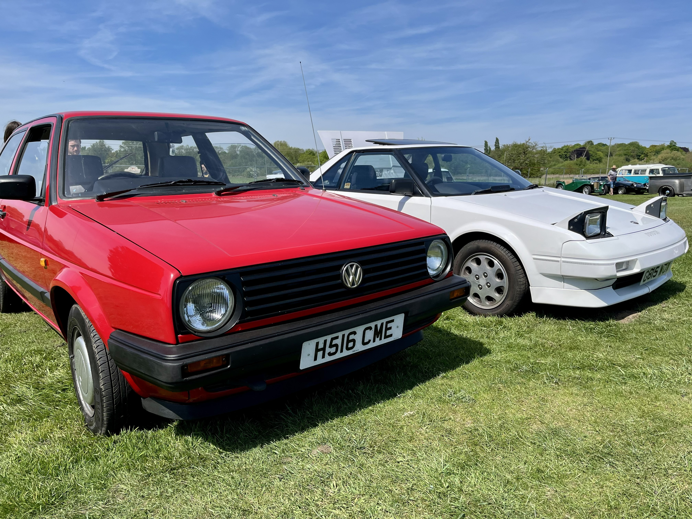
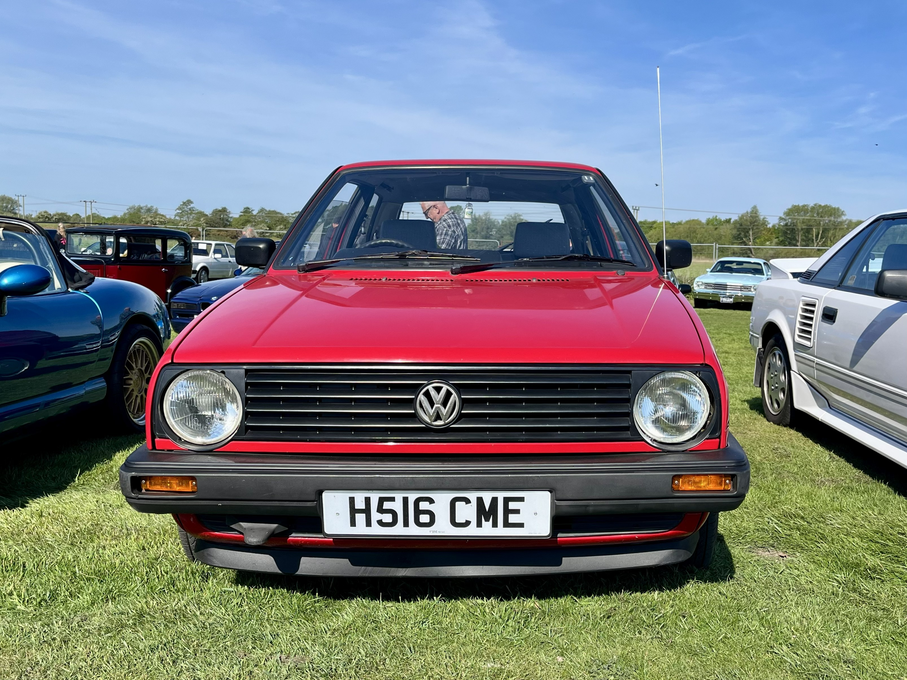
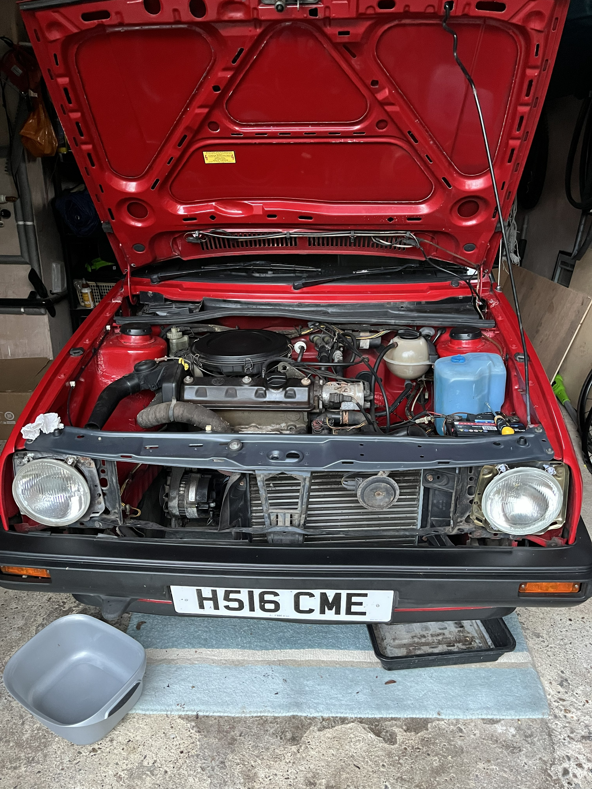
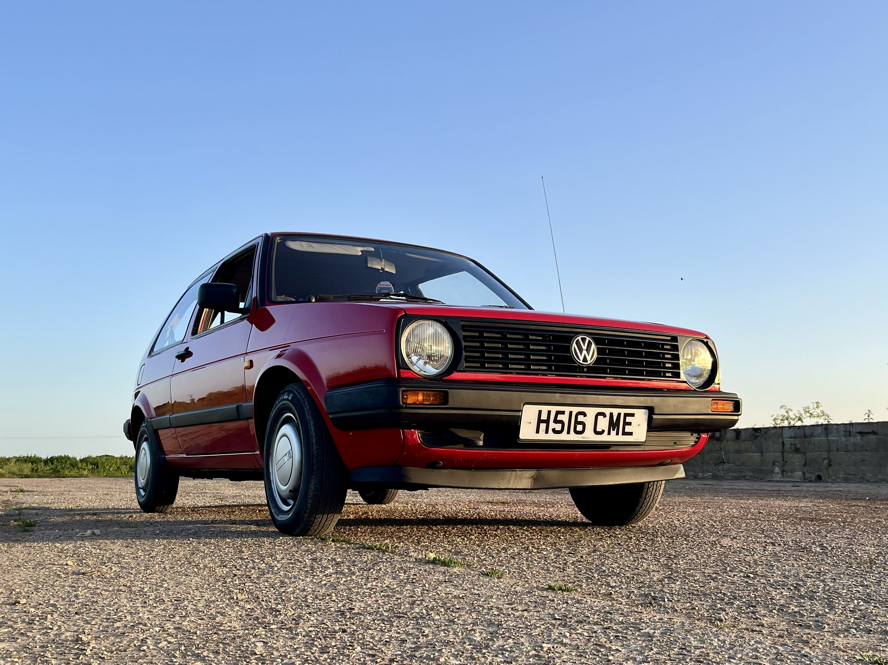
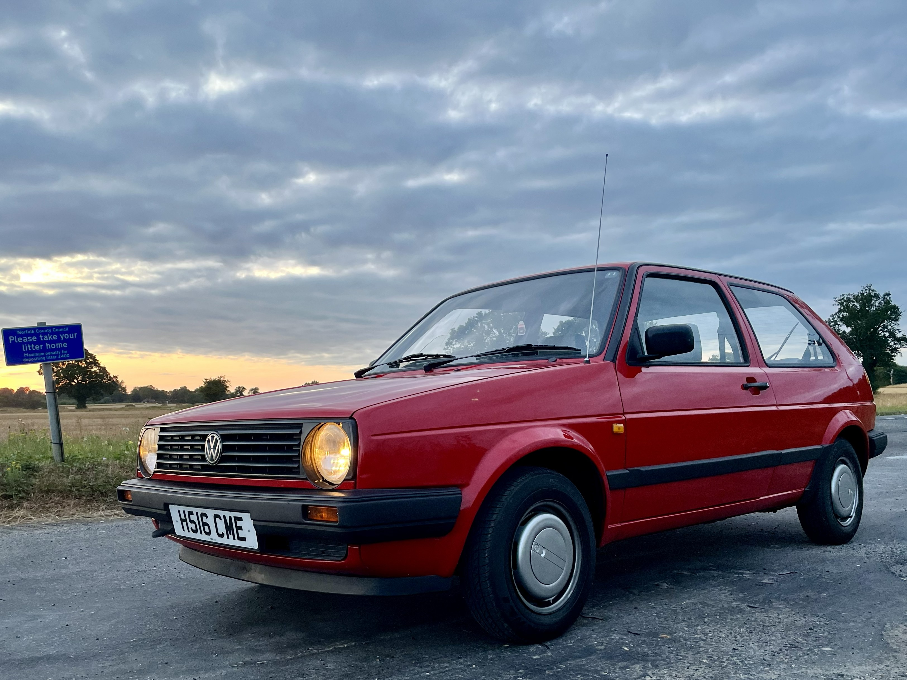
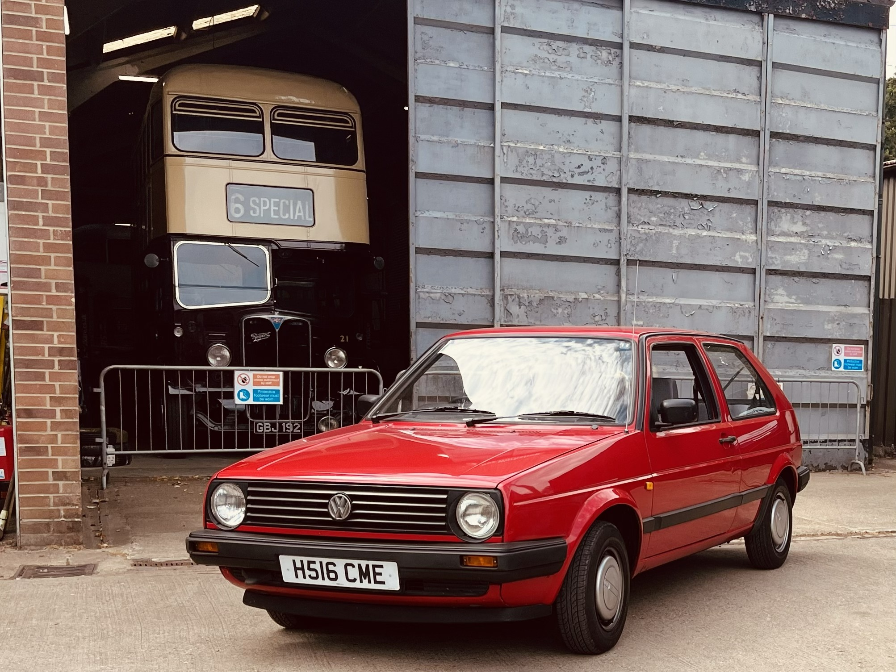

Golf Project

In June 2025 I bought my first car! A VW Mk2 Golf from 1991.
Since buying the car, I have been working on it to get it back to a good condition and make it my own. I have done bits and bobs to the car to keep it in a working order.
I plan to keep this car as original as possible, preserving its history.
So far I have replaced the filters on the car as it suffered a break down and i narrowed the problem down to the filters.
Over the winter, I put rust inhibitors in the car to prevent further corrosion.
Looking ahead, I plan to keep the car in good condition and do some light modifications to make it my own while keeping the original character of the car.
Repair & Driving Diary
9th May 2026
I passed my driving test 4 days prior and I decided to take the car to my local monthly classic car show
Taking the car to a show was something I had been looking forward to for a while. We used to own a 1972 VW camper van and it hadn't been since before Covid-19 that I had taken a vehicle to a car show.
Some of my friends took their cars and it was a great first show experience.


31st May 2026
Anyone who has owned a classic car knows that they don't keep moving without routine maintenance.
Unfortunately this would be the moment when I had a quick cheack after a drive to find a small coolant leak and then realised the coolant was orange... (it was blue originally).
This eventually lead to a whole system flush with distilled water. I decided to replace the thermostat while I was at it as it was looking worse for wear.
The next bit couldn't have gone worse however. I had bought a torque wrench to ensure I was tightening the bolts to the correct specification but it was faulty and sheared the bolt on the thermostat housing. I managed to get replacements easily though.
Next, I was refitting the radiator for the final time and a plastic connector broke off, meaning I had to replace the whole radiator as you couldn't get a replacement for just the connector.
It was a costly lesson in the importance of quality tools and the potential pitfalls of relying on them for critical repairs.

It's currently 1st September 2026 as of writing this and nothing else has malfunctioned since.
Gallery
Here are some more photos of the car and the work I have done on it:




